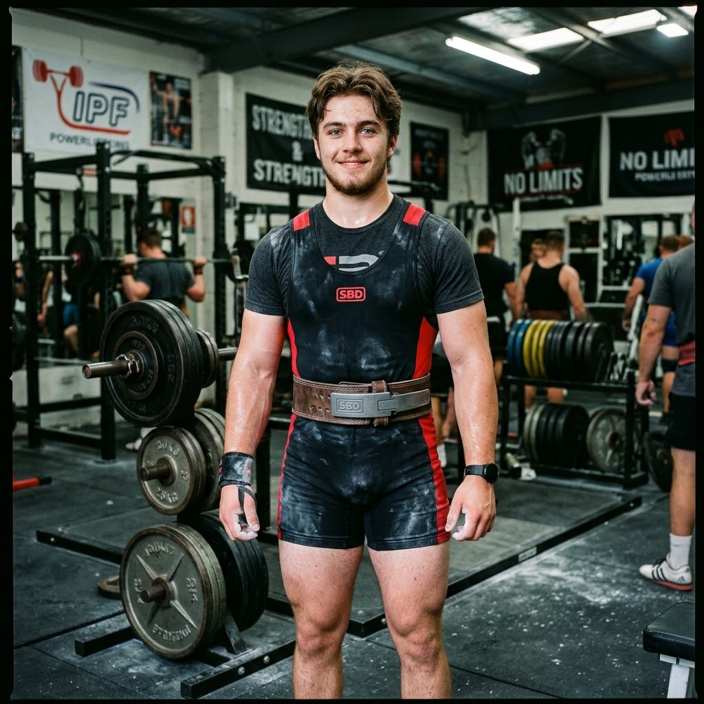

Черкаський Іван
Пауєрліфтер, Wordpress розробник
Про мене
Я — WordPress-розробник і пауерліфтер. У розробці зараз роблю сайти на WordPress, збираю верстку на HTML/CSS (обожнюю Flexbox) та підключаю інтерактив через JS, а для бэкенду використовую PHP та MySQL. Поза монітором тренуюся в залі — пауерліфтинг для мене про дисципліну, витривалість та вміння постійно брати нову вагу. Вважаю, що в житті важливо знаходити баланс між розумовою працею та фізичним розвитком, а до будь-якої справи підходити чесно й з повною віддачею.
Захоплення
Те, що приносить задоволення у вільний час.
PowerLifting
Комп'ютерні ігри
Веб Розробка
Перепродаж усього
Що я вмію
- Працювання з нейромережамивпевнено
- Командувать Денісомбомбезно
- Пріседаніяvery beautiful
Связь грязь
Як зі мною зв'язатись.